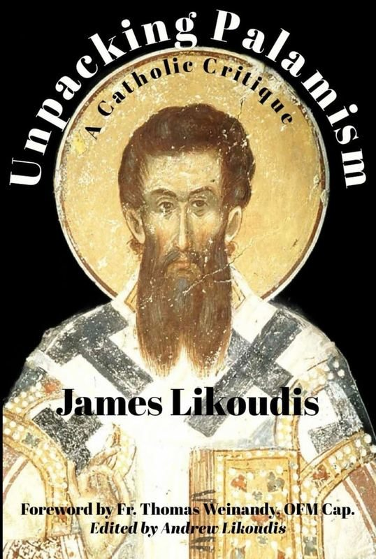

Unpacking Palamism examines the theology of Gregory Palamas — particularly the distinction between the divine essence and uncreated energies — and its implications for Catholic-Orthodox dialogue. Likoudis assesses the compatibility of Palamite theology with Catholic doctrine and charts a path toward mutual understanding.
This is one of the most technically demanding works in the Likoudis corpus, engaging Byzantine and scholastic theology with precision and care.
“This work represents the capstone of Dr. Likoudis’s life-long effort toward reconciling his Eastern Orthodox brethren with the Catholic Church. His concise and informative treatment of Gregory Palamas, the famous and controversial 14th century monk of Mount Athos and Archbishop of Thessalonica, is both highly appreciative and gently critical. On the one hand, Likoudis praises Palamas’s ascetical-mystical spirituality and theology of theosis, calling his rich Mariology ‘sublime’ and suggesting that Catholics have much to learn from him. On the other hand, he devotes two chapters to Palamas’s controversial notion of God’s ‘uncreated energies,’ which, though distinct from God’s transcendent essence, allegedly do not compromise divine simplicity and yet can be experienced by men as the ‘Light of Mount Tabor.’ Likoudis carefully reviews both the writings of Catholics sympathetic with Palamas as well as those who are critical, noting how some Eastern Orthodox theologians champion Palamas as a rival to St. Thomas Aquinas, yet also noting how others such as Fr. Alexander Schmemann concede the logical necessity of a universal church’s need for a universal head in the bishop of Rome. Highly recommended.”
Dr. Philip Blosser, Professor of Philosophy, Sacred Heart Major Seminary“The Churches of the Christian East and West have wrestled for many centuries with the question of the relationship between the uncreated and created realms. Orthodox Archbishop Gregory Palamas of Thessalonica weighed in on this matter in a period of heightened controversy related to the spiritual experiences and contemplative methods of the Athonite Hesychasts, forging out of the crucible of both prayer and polemics what he believed to be a theological solution found in the essence-energies distinction in God. The positive reception of this distinction as defined by the Orthodox saint has been by no means univocal in either East or West, and the emergence of a divisive and hyper-polemical neo-Palamite school in modern Eastern Orthodoxy has shed far more heat than light on the subject. In this work, James Likoudis presents a worthy synthesis of his own thinking along with several others on the matter, with varying degrees of sympathy and antipathy towards the Palamite distinction and its possible effect on the prospects of Orthodox-Catholic unity.”
Fr. Daniel Dozier, Executive Director, God With Us Eastern Catholic Formation“Likoudis’s concise retelling of the Palamite controversy and problematic readings of Palamism, both among Catholic and Orthodox scholars, as well as his concise summary of Palamas’s Mariology, provide an accurate representation of academic positions thereon by the pars maior of Catholic theologians and can be used with great profit for becoming acquainted with the historically controversial assertions of Palamas and Palamists in both Late Byzantium and by Modern systematic theologians.”
Rev. Christiaan Kappes, PhD, SLD, Academic Dean, Byzantine Catholic Seminary of Ss. Cyril and Methodius; Co-author, ‘Palamas Among the Scholastics,’ in Logos: A Journal of Eastern Christian Studies“James Likoudis’s Unpacking Palamism: A Catholic Critique is a most welcome and timely publication. While debate will continue over the compatibility of Palamas’s theology and metaphysics with Catholicism, there can be no disputing Likoudis’s pivotal role in bringing Palamas into the theological awareness of many Western Christians. Likoudis’s trenchant engagement with Palamas over several decades helped set the tone for Orthodox-Catholic apologetics and has had a non-negligible impact in sparking a good deal of more recent scholarly research. This alone more than justifies this publication of Likoudis’s collected writings on Palamas. However, it is Likoudis’s clear presentation of Palamas’s beautiful teaching on the Blessed Virgin Mary, the Mother of all Christians, that sets this book apart. Mary is the key to resolving remaining theological differences between Catholic and Orthodox, and Likoudis provides his readers with a guide to knowing Mary according to the mind of this ‘Pillar of Orthodoxy.’”
Dr. Jared Goff, Adjunct Professor of Dogmatic Theology, Byzantine Catholic Seminary of Ss. Cyril and Methodius; Co-author, ‘Palamas Among the Scholastics,’ in Logos: A Journal of Eastern Christian Studies"James Likoudis deserves much praise for this present volume, which provides a sound Catholic critique of the essence/energies distinction promoted by… Gregory Palamas. This volume is enriched by an excellent foreword by Fr. Thomas Weinandy, OFM Cap., and a number of valuable appendices."
Robert Fastiggi, PhD, Bishop Kevin M. Britt Chair of Dogmatic Theology and Christology, Sacred Heart Major SeminaryStay connected with the Foundation
No spam. Unsubscribe anytime.